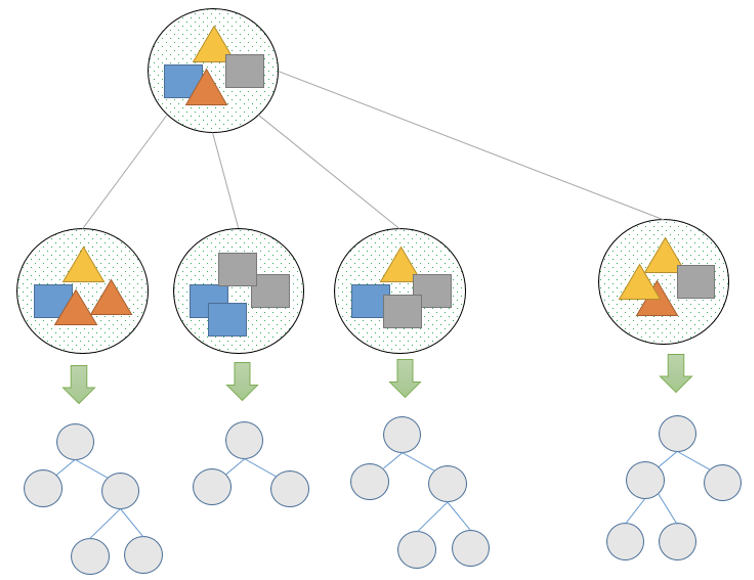
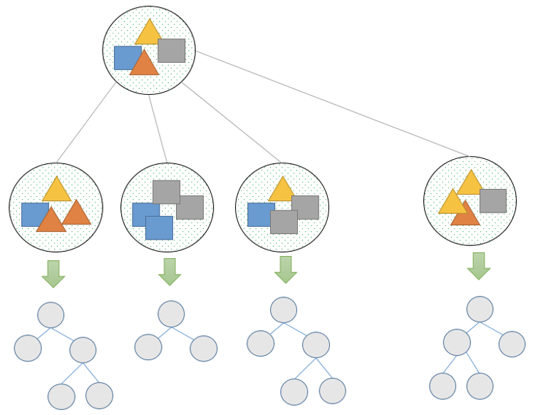
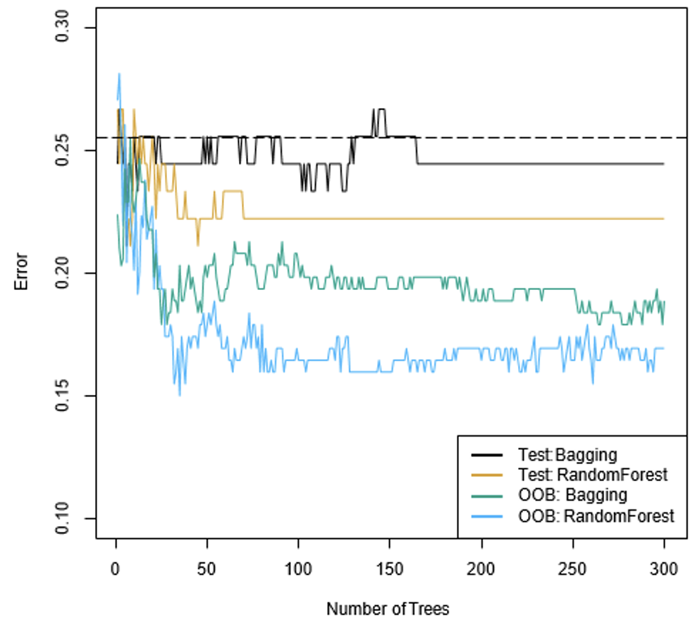
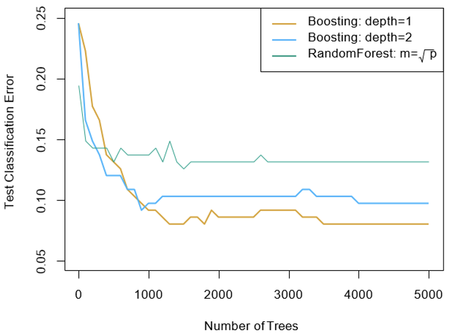
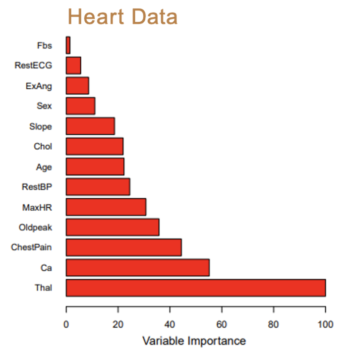

Fundamentals of
Data Analytics and
Predictions
Tree Methods II
Xi (Rossi) LUO
Department of Biostatistics and Data Science
School of Public Health
The University of Texas Health Science Center at Houston
Bagging —1
- Bootstrap aggregation, or bagging, is a general-purpose
procedure for reducing the variance of a statistical learning method;
- It is particularly useful and frequently used in the context of decision trees
- Given a set of n independent observations $Z_1$, $Z_2$, $\dots$ $Z_n$, each with variance
$\sigma^2$, the variance of the mean $Z'$ of the observations is given by $\frac{\sigma^2}{n}$
- In other words, averaging a set of observations reduces variance
- So, if we have more than one training set, we could grow a tree on each set and take the average
tree
- But we generally do not have access to multiple training sets!
Bagging —2
- Instead, we bootstrap, by taking repeated samples from the training dataset
- Generate B different bootstrapped training sets
- Then train our method on the $b^{th}$ bootstrapped training set in order to get
$\hat{f}^{*b}(x)$, the prediction at a point x
- Then average all the predictions to obtain
$\hat{f}_{bag}(x)=\frac{1}{B}\sum_{b=1}^{B}\hat{f}^{*b}(x)$

Bagging —3
- For classification trees: for each test observation, we record the class predicted by each
of the B trees and take a majority vote
- The overall prediction is the most commonly occurring class among the B predictions.

Random Forests
- Random forests provide an improvement over bagged trees by way of a small tweak
that decorrelates the trees
- To further reduces the variance when we average the trees
- We build a number of decision trees on the bootstrapped training samples
- But when building these trees, each time a split in a tree is considered, a random selection of
m predictors is chosen as split candidates from the full set of p predictors
- The split is allowed to use only one of those m predictors
- A fresh selection of m predictors is taken at each split (typically we choose $m\approx
\sqrt{p}$)
- That is, the number of predictors considered at each split is approximately equal to the
square root of the total number of predictors.
Example: The Heart Dataset
- Bagging and random forest results
- The test error (black and orange) is shown as a function of B, the number of
bootstrapped training sets used
- Random forests were applied with $m\approx \sqrt{p}$ (4 of the 13 for the Heart data)
- The dashed line indicates the test error resulting from a single classification tree.
- The green and blue traces show the OOB error

Out-of-Bag Error Estimation
- It turns out that there's a straightforward way to estimate the test error of a bagged model
- Recall that the key to bagging is that trees are repeatedly fit to bootstrapped subsets of the
observations
- The remaining observations not used to fit a given bagged tree are referred to as the
out-of-bag (OOB) observations
- We can predict the response for the $i^{th}$ observation using each of the trees in which that
observation was OOB
- This estimate is essentially the LOO cross-validation error for bagging, if B is large
Boosting
- Like bagging, boosting is a general approach that can be applied to many statistical learning
methods for regression or classification
- Recall that bagging involves creating multiple copies of the original training data set using
the bootstrap, fitting a separate decision tree to each copy, and then combining all of the
trees in order to create a single predictive model
- Notably, each tree is built on a bootstrap data set, independent of the other trees
- Boosting works in a similar way, except that the trees are grown sequentially:
each tree is grown using information from previously grown trees
Boosting Algorithm
- 1. Set $\hat{f}(x)=0$ and $r_i=y_i$ for all i in the training set
- 2. For $b=1,2,\dots,B$, repeat:
- Fit a tree $\hat{f}(x)$ with d splits (d+1 terminal nodes) to the training data (X, r)
- Update $\hat{f}$ by adding in a shrunken version of the new tree: $\hat{f}(x)\leftarrow
\hat{f}(x)+\lambda\hat{f}^b(x)$
- Update the residuals $r_i\leftarrow r_i- \lambda \hat{f}^b(x_i)$
- 3. Output the boosted model,
$\hat{f}(x)=\sum_{b=1}^{B}\lambda\hat{f}^b(x)$
What is the idea behind this procedure?
Boosting Continued
- Unlike fitting a single large decision tree to the data, which amounts to fitting the
data hard and potentially overfitting, the boosting approach instead learns
slowly
- Given the current model, we fit a decision tree to the residuals from the model
- We then add this new decision tree into the fitted function in order to update the residuals
- Each of these trees can be rather small, with just a few terminal nodes
- By fitting small trees to the residuals, we slowly improve $\hat{f}$ in areas where it does not
perform well
- The shrinkage parameter $\lambda$ slows the process down even further, allowing more and
different shaped trees to attack the residuals
Boosting for Classification
- Boosting for classification is similar to boosting for regression
- The R package gbm (gradient boosted models) handles a variety of regression and classification
problems
Example: Gene Expression Data
- Results from performing boosting and random forests on the fifteen-class gene expression
data set in order to predict cancer versus normal
- The test error is displayed as a function of the number of trees. For the two boosted
models, $\lambda=0.01$. Depth-1 trees slightly outperform depth-2 trees, and both outperform
the random forest, although the standard errors are around 0.02, making none of these
differences significant
- The test error rate for a single tree is 24%.

Tuning Parameters for Boosting
- The number of trees B
- Unlike bagging and random forests, boosting can overfit if B is too large, although this
overfitting tends to occur slowly if at all; use cross-validation to find B
- The shrinkage parameter $\lambda$
- A small positive number. This controls the rate at which boosting learns
- Typical values are 0.01 or 0.001; the right choice can depend on the problem
- Very small $\lambda$ can require using a large value of B to achieve good performance
- The number of splits in each tree d
- Controls the complexity of the boosted ensemble.
- d=1 often works well, in which case each tree is a stump, consisting of a single split and
resulting in an additive model
Variable Importance Measure
- For bagged/RF regression trees, we record the total amount that the RSS is decreased due to
splits over a given predictor, averaged over all B trees.
- A large value indicates an important predictor.
- Similarly, for bagged/RF classification trees, we add up the total amount that the Gini
index is decreased by splits over a given predictor, averaged over all B trees

Summary
- Decision trees are simple and interpretable models for regression and classification
- However, they are often not competitive with other methods in terms of prediction accuracy
- Bagging, random forests and boosting are good methods for improving the prediction accuracy of
trees
- They work by growing many trees on the training data and then combining the predictions of
the resulting ensemble.
- Random forests and boosting are among the state-of-the-art methods for supervised learning